John L. Scott - Peter Avolio
HTML / CSS / Javascript
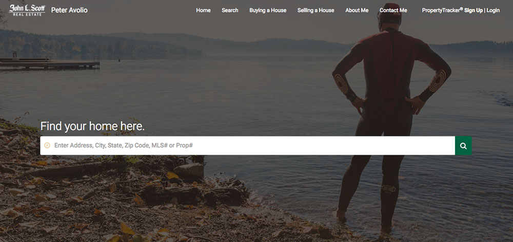 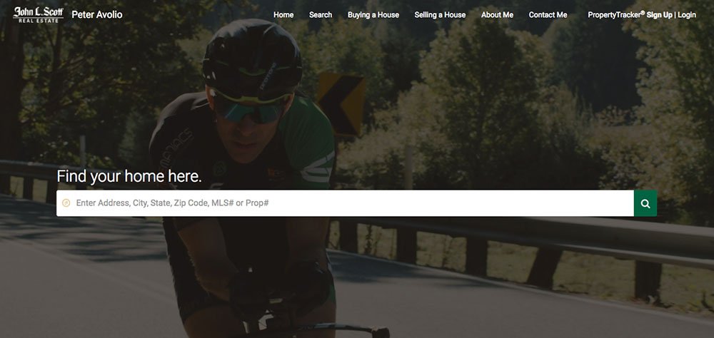 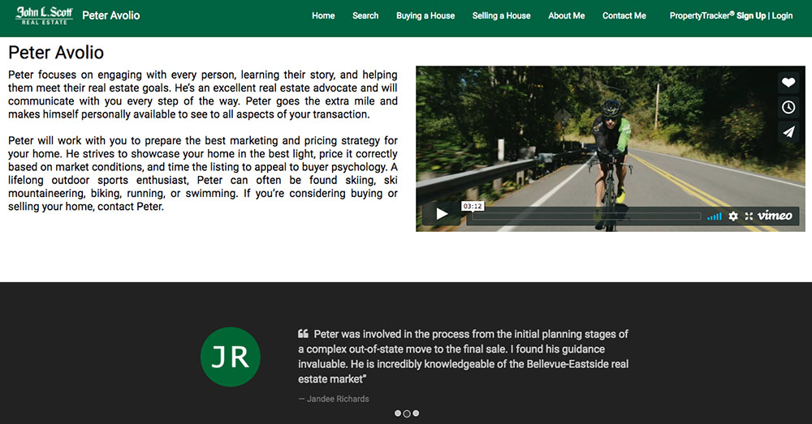 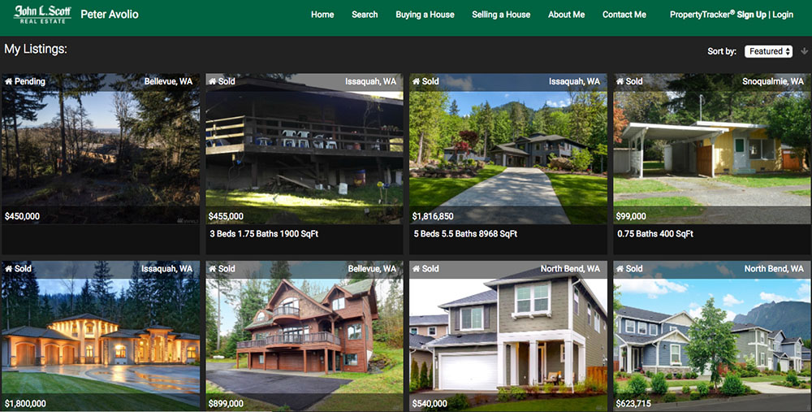Peter Avolio is one of the brokers at my office. He wanted something modern and showcase his outdoordiness. For this website I had to override a lot of our CMS defaults using HTML/CSS and JavaScript. View Website
Australver
Sketch / Invision


Australver is a Sketch designed and Invision prototyped booking agency website for musicians. I did this project during my design class and I will be showcasing it as my "demo day" project at Epicodus once I code it. View project in InVision
Ping Pong
Javascript / HTML / CSS

Ping Pong test website. Numbers divisible by 3 become "Ping", numbers divisible by 5 become "Pong" and numbers divisible by 15 become "Ping Pong". This project used to be a placement test at Epicodus where I went to school. I can see why. At the time, it was the most challeging project I had ever coded. Launch project or view code in Github
Volunteer Connection
Javascript / HTML / CSS
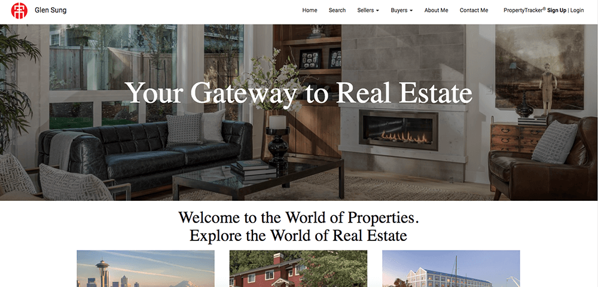 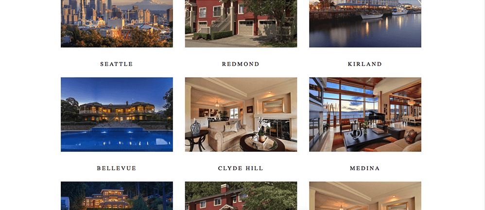 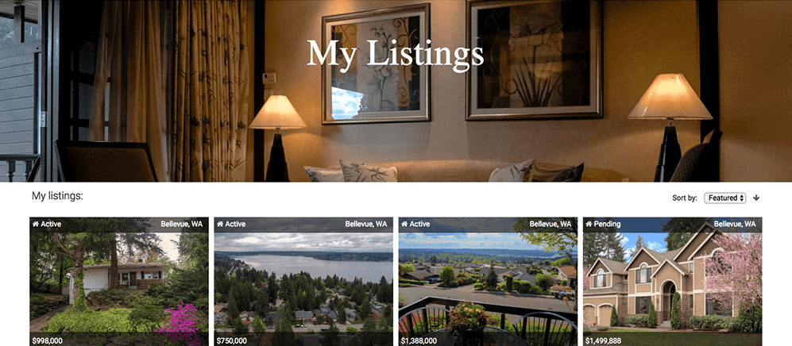Glen Sung had a 3rd party website by built on wordpress. Although he wanted to keep a lot of the same layout of his old site, this project gave me a change to try new things like a parallax. View Website
City Temperature
Node / HTML / CSS

This project was made during the first week of Javacript class. It uses the Open Weather Map API to tell you the humidity and temperature of the city you search. View Project in Github
Trackers Earth Internship
HTML / CSS / Javascript


I interned at Tracker Earth in Portland, Oregon for almost two months. I worked closely with their Sr. Developer and Designer where I coded parts of their home page, their splash page, various modals. During the last week of my internship I started working on a space ship game using Javascript. This website will be publish in 2017.
Meal Tracker
Angular / HTML / CSS
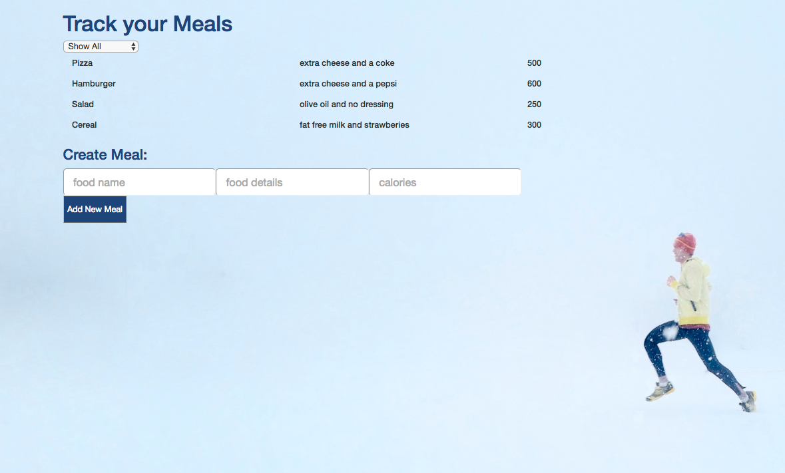 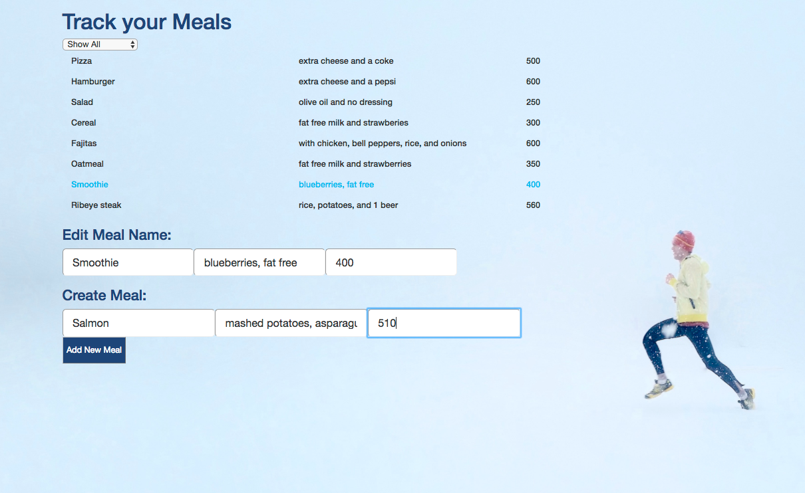Meal Tracker was done using Angular 2. This app allows you to add new meals, edit them, and filter out between healthy vs unhealthy depending on their calorie count. Out of the Javascripts frameworks that we reviewed at school, Angular 2 was the one I enjoyed working with the most and felt more comfortable with it. View project on Github
Scout App
Sketch / Pencil / Eraser
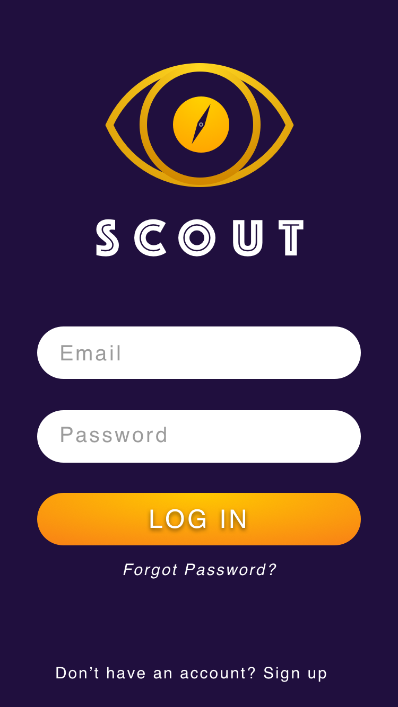
Scout won the award for best branding and was a group project where we had to design an app that people would use to get out more. I was in charge on drawing sketches, designing the home page in sketch among other things. These are examples of the final project.
Vinyl Records


These vinyl records were created in Sketch. The task was to make something out of just circles, triangles, and squares only. I learned that logos that really work are usually made out of the most basics shapes. These vinyl covers then ended up being used on my Australver booking agency project because I was very very happy how they turned out.
Logo Project
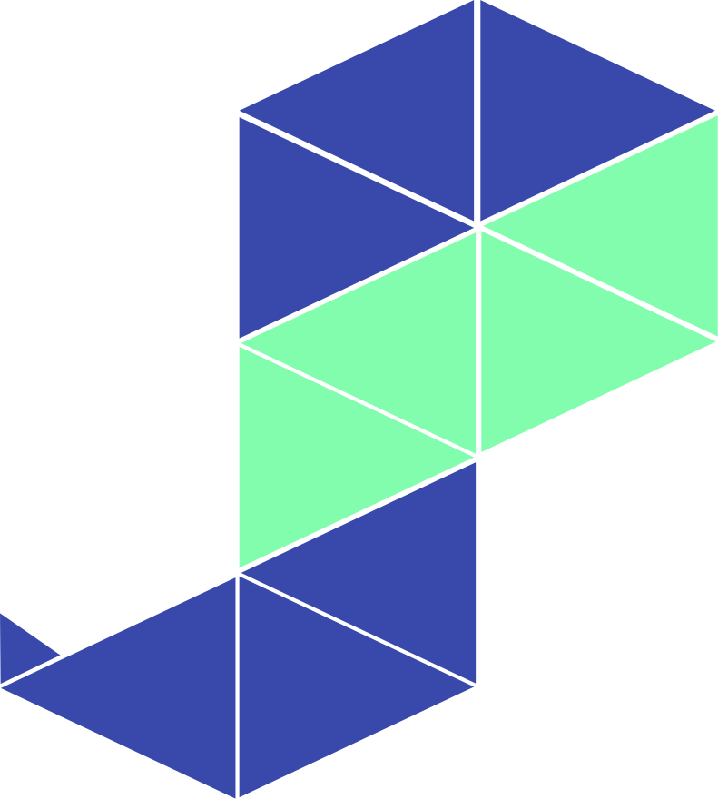
The goal for thi project was to come up with a logo using only one shape. I decided to use my favorite shape, the triangle. This logo was designed using Sketch.
Andy Sather Real Estate
HTML / CSS / Javascript
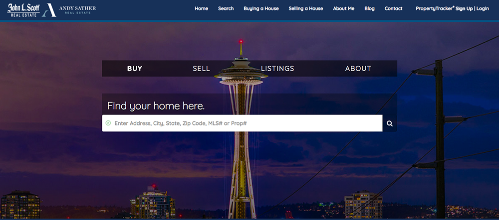 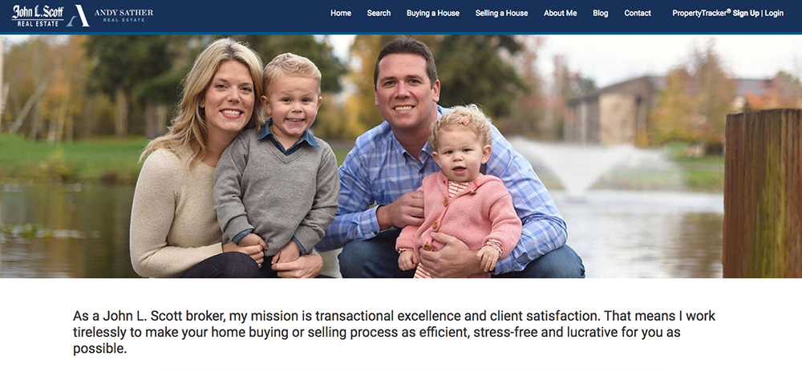Andy Sather is a top 1% broker at John L. Scott. Some of the most challenging tasks with his website were choosing a color scheme, fonts, and adding Andy's logo next to John L. Scott's logo in the navigation bar which I figured out how to do using jQuery. View Website